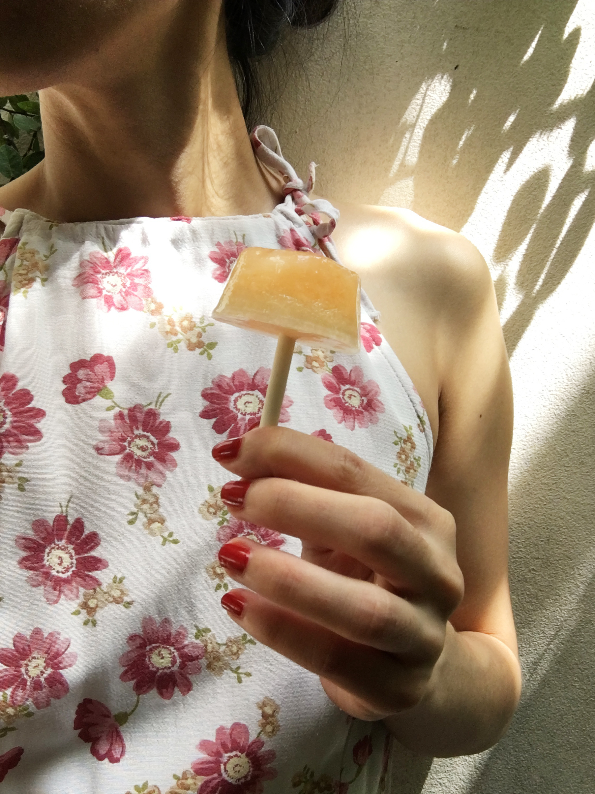

Sour Cherry Ice Lolly
Make roughly 300 ml of Concentration
Ingredients
-
Sour Cherry Ice Lolly Concentration
- 300 ml of cherry juice, strained
- 150 g of sugar
- 30 g of lime juice
- 3-4 big pinches of salt
Equipment
- Muffin tin or Paper cups
- Lollipop sticks
What is an ice lolly? An ice lolly is essentially the same as a popsicle. It is a water-based frozen snack.
In 1905, an 11-years-old American boy named Frank Epperson left a stirring stick in a soda drink out on the porch over the winter night. The next morning he founded the soda drink frozen to the stick. Voila! He accidentally invented a popsicle. When Epperson grew up, he decided to patent his invention in 1923. Epperson wanted to call the invention “Eppsicle”, but his children kept referring to the snack as “Popsicle”. Epperson listened to his children and changed the name of the invention from “Eppsicle” to “Popsicle”.
The “Pop” in the “Popsicle” probably refers to the term “pop” that means dad whereas the “-sicle” brings to mind the process of how the snack was made. Popsicles are made in the same way that icicles form.
In our recipe, we used the term ice lolly to reflect the form of our snack—a heavy big blob head sticking from a thin round column paper stick1. As you might remember from you middle school science class, one of the property of liquid is that it assumes the shape of its container. Our sour cherry ice lolly concentration can take the shape of anything you can imagine.
Without Molds
Muffin pan and small paper cups will get you the ice lolly look. Fill the cups or the pan with Sour Cherry Ice Lolly Concentration. Cover the cups or the muffin pan with alumnium foil. Poke the foil with the ice cream sticks or lollipop sticks.
more stories